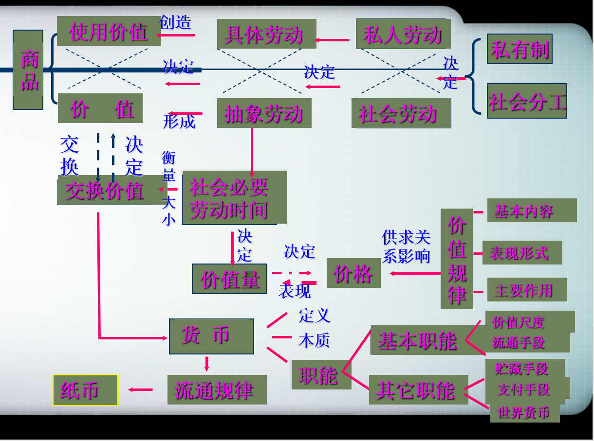
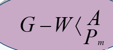
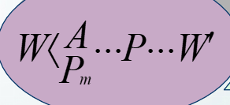
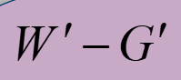

资本主义生产方式占统治地位的社会的财富，表现为“庞大的商品堆积”，单个的商品表现为这种财富的元素形式。因此，我们的研究就从分析商品开始。
——马克思：《资本论》
什么是商品?
自然经济——自给自足的经济
商品经济——交换经济（以交换为目的而进行生产的经济形式）
商品经济存在的条件
商品经济：以交换为目的而进行生产的经济形式
商品经济是社会经济发展到一定阶段的产物。
它出现于原始社会末期，在资本主义社会之前一直存在，但不占主导地位。资本主义之前的商品经济以换取自己所需要的使用价值为目的，是一种简单商品经济。
在资本主义社会，商品经济才成为普遍的经济形式。
价值/使用价值 => 商品
使用价值是商品能满足人们某种需要的属性，即商品的有用性。
使用价值，反映的是人与自然之间的物质关系，是商品的自然属性，是一切劳动产品共有的属性。
使用价值构成社会财富的物质内容。
使用价值是交换价值的物质承担者。
表现为一种使用价值同另一种使用价值相交换的量的关系或比例。
决定商品交换的比例的，不是商品的使用价值，而是价值。
是凝结在商品中的无差别的一般人类劳动，即人类脑力和体力的耗费。
商品交换实际上是商品生产者之间相互交换劳动的关系。
商品的价值在本质上体现了生产者之间的一定的社会关系。
价值是商品所特有的社会属性。
对立：对于所有者来说，二者不可兼得
统一：任何商品都同时具有使用价值和价值两个因素。使用价值是价值的物质承担者；价值存在于使用价值之中
商品是劳动产品，生产商品的劳动可区分为:
具体劳动
=> 同一劳动的两种规定
抽象劳动
商品的价值包括质的规定与量的规定两个方面。
价值的质的规定回答的是价值的实体是什么，价值的量的规定则回答价值的大小由什么决定和怎样决定。
商品的价值是凝结在商品中的劳动，价值量是由生产商品所耗费的劳动量决定的，而劳动量则按照劳动时间来计量。 决定商品价值量的不是生产商品的个别劳动时间，而只能是社会必要劳动时间。
“社会必要劳动时间是在现有的社会正常的生产条件下，在社会平均的劳动熟练程度和劳动强度下制造某种使用价值所需要的劳动时间。”
商品的价值量由生产该商品耗费的社会必要劳动量决定，而劳动量按照劳动时间来衡量。
商品的价值量同简单劳动与复杂劳动有密切的关系。
简单劳动是指不需要经过专门训练和培养的一般劳动者都能从事的劳动。
复杂劳动是指需要经过专门训练和培养，具有一定文化知识和技术专长的劳动者所从事的劳动。
形成商品价值量的劳动，是以简单劳动为尺度的。复杂劳动等于自乘的或多倍的简单劳动。在相同的劳动时间里，复杂劳动创造的价值大于简单劳动创造的价值。
商品的自然形式与价值形式
价值形式的发展:
简单的或偶然的价值形式——总和的或扩大的价值形式——一般价值形式——货币形式
货币是在长期交换过程中形成的固定充当一般等价物的商品。
货币的职能
涵义：用货币为尺度来衡量和表现其他商品的价值量大小
作用：使商品在量上可以比
特点：可以是观念上的货币，不一定是现实货币
价格：商品价值的货币表现
涵义：货币在商品流通中充当商品交换的媒介
特点：必须是现实货币
商品流通：以货币为媒介的商品交换
公式：W——G——W
货币作为流通手段使经济危机在形式上具有可能
涵义：货币退出流通领域，当作社会财富的一般代表保存起来
作用：在金属货币流通条件下，能自发调节货币流通量，不会发生货币过多的现象
特点：必须是足值的金属货币
涵义：延期支付、清偿债务或支付税金等
产生的前提:商业信用（赊购赊销）
支付风险使经济危机形式上的可能性扩大
涵义：货币超出国界，在世界市场执行一般等价物的职能
职能：作为国际价值尺度、购买手段、支付手段、平衡贸易差额、财富转移
五种职能的关系: 五种职能的关系价值尺度、流通手段是基本职能，其他是派生职能
随着货币的产生，整个商品世界就分化为两极：
一极是各种各样的具体商品，它们分别代表不同的使用价值;
一极是货币，它只代表商品的价值。
货币的出现，有利于解决商品交换的困难，促进了商品经济的发展。
但是，货币的出现并没有也不可能解决商品经济的基本矛盾，即私人劳动和社会劳动的矛盾，反而使矛盾更加扩大和加深了。 所以，马克思把商品转换成货币，称为“商品的惊险的跳跃”，“这个跳跃如果不成功，摔坏的不是商品，但一定是商品占有者”。
价值规律是贯穿于整个商品经济的一般规律，它既支配商品生产，又支配商品流通。
价值规律内容：
在供求关系的影响下，商品的价格围绕商品的价值自发波动
积极作用:
消极后果:
私人劳动和社会劳动的矛盾贯穿商品经济发展过程的始终，决定着商品经济的各种内在矛盾及其发展趋势。
首先，决定着商品经济的本质及其发展过程。
其次，是商品经济的其他一切矛盾的基础。
最后，决定着商品生产者的命运。
在私有制商品经济条件下，商品生产者不能自己掌握自己的命运，而是听凭商品、价值、货币运动的摆布，人们之间一定的社会关系在人们面前采取了物与物的关系的虚幻形式。
首先，私有制商品经济条件下劳动产品只有采取商品的形式才能进行交换，人类劳动的等同性只有采取同质的价值形式才能在交换中体现出来。
其次，劳动量只有采取价值量这一物的形式才能进行计算和比较。
最后，生产者的劳动关系的社会性质只有采取商品之间即物与物之间相交换的形式才能间接地表现出来，这就使人们之间一定的社会关系被物与物的关系所掩盖，具有了拜物教性质。
通过对商品关系的深刻分析，马克思阐明了商品的二因素和生产商品劳动的二重性及其相互关系、价值的质和量的规定性及其变化规律、价值形式的发展和货币的起源、商品经济的基本矛盾和基本规律及其作用， 形成了科学的劳动价值论
马克思：
生产商品的劳动具有抽象劳动和具体劳动这二重属性，这是理解政治经济学的枢纽。
用抽象的人类劳动将不同质的商品统一起来，使一个商品的使用价值成为表现另一个商品的价值的形式，这个过程本身并不是自然的、天然的，是一个社会的过程。
⬇
物物交换的关系里隐藏着人与人的关系
⬇
这是一种异化的关系
⬇
物化、抽象化的关系
“物化”体现为：“商品形式在人们面前把人们本身劳动的社会性质反映成劳动产品本身的物的性质，反映成这些物的天然的社会属性，从而把生产者同总劳动的社会关系反映成存在于生产者之外的物与物之间的社会关系”。
⬇
资本主义社会里的一切事物都是“颠倒”的
⬇
人的物化与物的人格化同时发生
⬇
人在资本统治下的抽象性生存方式。这里的“物”在根本意义上是指抽象的交换价值
第一，马克思劳动价值论扬弃了英国古典政治经济学的观点，为剩余价值论的创立奠定了基石。
第二，马克思劳动价值论揭示了私有制条件下商品经济的基本矛盾，为从物与物的关系背后揭示人与人的关系提供了理论依据。
第三，马克思劳动价值论揭示了商品经济的一般规律，对理解社会主义市场经济具有指导意义。
马克思创立劳动价值论的时代，是工业化初期的蒸汽机时代。现在人类进入了21世纪，与马克思所处的时代相比，社会经济条件发生了很大变化。面对新的情况，必须深化对马克思劳动价值论的认识，根据变化了的实践在继承的基础上有所创新，有所前进。
深化马克思劳动价值论的途径
马克思指出：“资本主义社会的经济结构是由封建社会的经济结构中产生的。后者的解体使前者的要素得到解放。”
以社会化的机器大生产为物质条件、以生产资料的资本家私有制为基础、以剥削雇佣劳动为主要特征的生产方式。
马克思：“创造资本关系的过程，只能是劳动者和他的劳动条件的所有权分离的过程，这个过程一方面使社会的生活资料和生产资料转化为资本，另一方面使直接生产者转化为雇佣工人。”
必须拥有大量的有人身自由的但丧失了一切生产资料的劳动者；必须在少数人手中集中了大量的、为进行资本主义生产所必须的货币财富。
随着商品经济的发展，在竞争中获胜者成为最早的工业资本家；失败者逐渐衰落、破产，最终沦为雇佣工人。
商业资本从流通领域转移到生产领域，由此开始了资本主义生产。
是生产者和生产资料分离的历史过程。
原始积累: 在资本主义生产方式确立以前，通过暴力使生产者与生产资料分离，货币资本迅速集中于少数人手中的历史过程
原始积累≠资本积累
原始积累是资本主义生产方式的出发点，而不是结果。
正如马克思所说：“创造资本关系的过程，只能是劳动者和他的劳动条件的所有权分离的过程，这个过程一方面使社会的生活资料和生产资料转化为资本，另一方面使直接生产者转化为雇佣工人。
因此，所谓原始积累只不过是生产者和生产资料分离的历史过程。
这个过程所以表现为‘原始的’，因为它形成资本及与之相适应的生产方式的前史。
一是用暴力剥夺农民的土地（“圈地运动”）
二是用暴力掠夺货币财富（殖民掠夺）
一是原始积累的残酷、血腥和野蛮性。
二是原始积累加速了封建生产方式向资本主义生产方式的转变。
资本主义生产方式产生之后不断发展和成熟，对上层建筑也提出了变革的要求:
在政治上完成资产阶级革命，用资产阶级政权取代封建地主阶级的政权。
17世纪中期到18世纪后半期，英、法等国先后进行资产阶级革命，最终建立起资本主义生产方式。
资产阶级革命是资产阶级领导的民主革命，是资产阶级为资本主义发展扫除障碍，推翻封建制度，建立资产阶级专政的革命。
在英法资产阶级革命影响下，到19世纪中叶欧美各主要国家基本上都完成了资产阶级革命。
资产阶级政权取代封建地主阶级政权
机器大工业代替了工场手工业
劳动力是指人的劳动能力，是人的体力和脑力的总和。
劳动力成为商品，标志着简单商品生产发展到资本主义商品生产的新阶段。
劳动力不是天然是商品，基本条件:
劳动力的价值是生产、发展、维持和延续劳动力所必需的生活必需品的价值决定的。是资本主义工资的本质。
包括
劳动力的使用价值的特殊性：
在消费劳动力的使用价值的过程中能够不断创造出新的价值，而且这个新的价值将超出劳动力本身的价值，即超出资本在购买劳动力时支付的价值。 这样一来，资本所有者在购买和消费劳动力的过程中，不仅收回了自己的成本，而且获得了成本之外的增殖的价值，这也就是剩余价值的产生。
马克思：“资本是死劳动，它像吸血鬼一样，只有吮吸活劳动才有生命，吮吸的活劳动越多，它的生命力就越旺盛。工人劳动的时间就是资本家消费他所购买的劳动力的时间。”
剩余价值生产的本质在于剥削，这既表现为劳动力的使用价值与价值的不平等交换，也表现为死劳动对活劳动的剥削，物的人格化与人的物化和异化
资本主义所有制的实质：
资本家凭借对生产资料的占有，在等价交换原则的掩盖下，雇佣工人从事劳动，占有雇佣工人创造的剩余价值。 资本与雇佣劳动的关系由此具有了剥削与被剥削的对抗性质。因此，资本主义所有制是雇佣劳动赖以存在的基础，是资本与雇佣劳动之间剥削与被剥削关系的体现。
“生产剩余价值或赚钱，是这个生产方式的绝对规律。”
——马克思
资本主义生产的直接目的和决定性动机，就是无休止地采取各种方法获取尽可能多的剩余价值。这样一种不以人的意志为转移的客观必然性，就是剩余价值规律。
剩余价值: 是雇佣工人所创造的并被资本家无偿占有的超过劳动力价值的那部分价值，是雇佣工人剩余劳动的凝结
(资本主义的生产过程具有两重性)
劳动过程是劳动者通过有目的的活动，创造出满足人们某种需要的使用价值的过程。
价值增殖过程是剩余价值的生产过程，即使雇佣劳动创造的新价值大于劳动力的价值的过程。
资本主义生产是以不断追求剩余价值为目的的。
资本在资本主义生产过程中采取和劳动力两种形态
不变资本: 以生产资料形态存在的资本。
可变资本: 用来购买劳动力的资本。
把资本分为不变资本和可变资本，进一步揭示了剩余价值产生的源泉。它表明，剩余价值既不是由全部资本创造的，也不是由不变资本创造的，而是由可变资本创造的。
剩余价值率(m')
=m(剩余价值)/v(可变资本)
=剩余劳动/必要劳动
=剩余劳动时间/必要劳动时间
指在必要劳动时间不变的条件下，由于延长工作日的长度和提高劳动强度而生产的剩余价值
指在工作日长度不变的条件下，通过缩短必要劳动时间而相对延长剩余劳动时间生产的剩余价值
相对剩余价值的生产
超额剩余价值：企业由于提高劳动生产率而使商品的个别价值低于社会价值的差额
个别资本家获得超额剩余价值只是暂时的
提高劳动生产率(追求剩余价值、激烈的竞争)
⬇
超额剩余价值(个别资本家)
⬇
相对剩余价值产生(整个社会资本家)
剩余价值的资本化，就是资本积累。
资本积累的本质：就是资本家不断的利用无偿占有的工人创造的剩余价值来扩大自己的资本规模，进一步扩大和加强对工人的剥削和统治。
随着资本积累的不断增长，生产的社会性与资本主义的私人占有形式之间的矛盾日益加剧，这是资本主义被新的、更能够适应社会化大生产要求的社会形态所取代的根本原因。
资本积累不但是社会财富占有两极分化的重要原因，而且是资本主义社会失业现象产生的根源。
从自然形式上看，由生产的技术水平所决定的生产资料和劳动力之间的比例
从价值形式上看，可变资本和不变资本价值之间的比例称作资本的价值构成
由资本的技术构成决定，并反映技术构成变化的资本价值构成。通常用c:v表示
在资本主义生产过程中，资本有机构成的提高是一般趋势，这是由资本的本性决定的。其结果，就不可避免的造成大批工人失业，形成相对过剩人口。
在资本有机构成提高的情况下，由于可变资本的相对量的减少，资本对劳动力的需求日益相对地减少，其结果，就不可避免地造成大批工人失业，形成相对过剩人口。
所谓相对过剩人口，就是劳动力供给超过了资本对它的需要
资本循环是资本从一种形式出发，经过一系列形式的变化，又回到原来出发点的运动。
| 购买阶段 |  | 货币资本 | 为生产剩余价值准备条件 |
| 生产阶段 |  | 生产资本 | 生产剩余价值 |
| 销售阶段 |  | 商品资本 | 销售剩余价值 |
三种职能形式空间上的并存性
把全部资本按一定比例分成三部分，使其同时并存于货币资本、生产资本和商品资本三种形态上
三种循环形式时间上的继起性
必须同时连续不断地顺次通过三个阶段，相应变更它们的职能形式并回到原来的出发点
资本周转是周而复始、不断反复着的资本循环。
影响资本周转的关键因素:
社会再生产的核心问题是社会总产品的实现问题，即社会总产品的价值补偿和实物补偿问题。
社会总产品就是社会在一定时期（通常为一年）所生产的全部物质资料的总和。
--价值构成 => c+v+m (生产生产资料的第一部类Ⅰ)
--实物构成 =>
--价值补偿 <= 社会总产品的各个组成部分如何通过商品出售以货币形式实现价值(卖得出去)
--实物补偿 <= 各个组成部分转化为货币后，如何再购买到再生产所需要的生产资料和消费资料(买得回来)
马克思社会资本再生产理论，揭示了社会资本运动的内在规律性，即社会两大部类之间以及部类内部都应保持一定的比例关系，社会再生产才能顺利进行，否则社会总产品的实现就会遇到困难，生产过剩的经济危机就会产生。
在资本主义经济生活中，资本家并不是把剩余价值看作可变资本的产物，而是把它看作全部垫付资本的产物或增加额，剩余价值便取得了利润的形态。
为了获得更多的利润，不同生产部门的资本家之间必然展开竞争，大量资本必然从利润率低的部门转投到利润率高的部分，从而导致利润率平均化，在这个过程中，形成了社会的平均利润率。
社会平均利润率的形成是剩余价值规律与竞争规律作用的必然结果。
平均利润率是剩余价值总量对社会总资本的比率。
平均利润率的形成过程，实际上是全社会的剩余价值在各部门的资本家之间重新分配的过程。
利润转化为平均利润，价值也就转化为生产价格。生产价格是商品价值的转化形式，是生产成本与平均利润之和。
在价值转化为生产价格的条件下，价值规律作用的形式发生了变化。商品不再以价值而是以生产价格为基础进行交换，市场价格的变动不再以价值为中心，而是以生产价格为中心。从价值到生产价格的转化，是随着资本主义大工业的出现和发展而完成的，反映了从小商品生产到资本主义商品生产的历史发展过程。
剩余价值理论深刻揭露了资本主义生产关系的剥削本质，阐明了资产阶级与无产阶级之间阶级斗争的经济根源，指出了无产阶级革命的历史必然性
剩余价值论是马克思主义经济理论的基石，是无产阶级反对资产阶级、揭示资本主义制度剥削本质的锐利武器。由于唯物史观和剩余价值的发现，社会主义由空想变为科学
生产资料资本主义私人占有和生产社会化之间的矛盾，是资本主义的基本矛盾。
生产社会化
资本主义越发展，基本矛盾尖锐化就越是不可避免。
生产过剩——“相对过剩”
表现:
第一，生产无限扩大的趋势与劳动人民有支付能力的需求相对缩小的矛盾;
第二，个别企业内部生产的有组织性和整个社会生产的无政府状态之间的矛盾。
危机、萧条、复苏、高涨
解决“生产过剩”的问题所采取的方法:
缓解生产过剩 → 生产过剩原因：有效需求不足 → 根源在于资本主义制度的矛盾
现代金融危机与古典经济危机在本质上相同。
马克思：一切现实的危机的最后原因，总是群众的贫穷和他们的消费受到限制，而与此相对比的是，资本主义生产竭力发展生产力，好像只有社会的绝对的消费能力才是生产力发展的界限。
资产阶级在它已经取得了统治的地方把一切封建的、宗法的和田园诗般的关系都破坏了。它无情地斩断了人们束缚于天然首长的形形色色的封建羁绊，它使人与人之间除了赤裸裸的利害关系，除了冷酷无情的‘现金交易’，就再也没有别的任何联系了。它把宗教的虔诚、骑士的热忱、小市民的伤感这些情感的神圣激发，淹没在利己主义打算的冰水之中。
——马克思
主要是政治统治和社会管理。使社会生活保持在统治阶级所制定的秩序要求之内。国家还要运用各种权力和资源对邮政、铁路、水利、文教、卫生保健、社会福利等事业进行管理，以保证社会生活的正常进行。
是指资本主义国家对外进行国际交往与维护国家安全和利益的职能。
资本主义国家政权采取的是分权制衡的组织形式，即国家的立法权、行政权、司法权分别由三个权力主体独立行使，形成各主体之间的“制衡”。
资本主义国家的选举是资产阶级制定某种原则和程序，通过竞选产生议会和国家元首的一种政治机制。在资本主义国家中，选举已经成为国家政治制度运行中对社会发展和稳定产生举足轻重影响的一个不可或缺的政治机制。
从形式上看，竞选制度是公民参与国家事务的重要形式。 从实际政治作用上看，选举制是协调统治阶级内部利益关系和矛盾的重要措施。
政党是特定阶级利益的集中代表，是代表一定阶级、阶层或集团的根本利益，为达到政治目的，特别是为了取得政权和保持政权而建立的一种政治组织。
当代资本主义国家基本上都实行的是政党制度。
从政党制度的类型上看，大致有两党制和多党制等形式。
两党制是由两个势均敌的政党通过竞选争夺执政地位，交替组织政府，轮流执掌政权的政党制度。它表现为一党执政时，另一个党就成为反对党，可以对执政党的行为进行批评和攻击，并在一定程度上对执政党起牵制和监督的作用。
多党制是指资本主义国家中由两个以上的政党轮流或联合执政的政党制度。
君主的权利受宪法限制。议会是最高立法机关，内阁（政府）由议会产生，对议会负责，掌握实权。
议会是国家最高权利机关，政府由议会中拥有多数席位的一个政党或几个政党联盟组阁，并对议会负责。总统是“虚位元首”。（德国、意大利、奥地利）
总统是国家元首，又是政府首脑。总统直接任命、领导政府。总统不能解散议会，议会也不能将总统解职，除非对总统进行弹劾并加以定罪。（自由国度灯塔国）
瑞士特有的一种政体。联邦委员会是最高行政机构，由联邦议会选出7名委员组成，分别担任7个部的部长，任期4年。联邦主席兼联邦委员会主席，由议会从7名委员中选举产生，任期1年。议会掌握立法权，委员会必须服从议会决定。
作为资本主义国家意识形态的各种资产阶级的思想理论和观念是资产阶级在长期的反封建专制主义和宗教神学的斗争中逐步形成和发展起来的。
在资本主义国家产生之后，资本主义的意识形态由统治阶级在以往形成的资产阶级思想理论和观念的基础上自觉地建立起来的。
马克思以“商品”为起点，以劳动二重性为基础，通过分析劳动的自然属性与社会属性在资本主义生产方式下发生分离，引发出对货币的本质以及在商品经济条件下货币向资本的转化的进一步分析， 从而最终揭示了利润的本质和产生过程，即资本在自己的本性的驱动下按照自身发展的逻辑通过剥削来不断追求剩余价值的本质和过程。